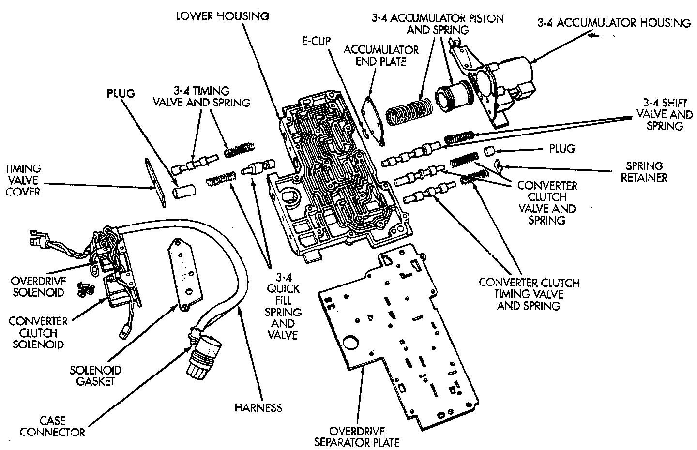
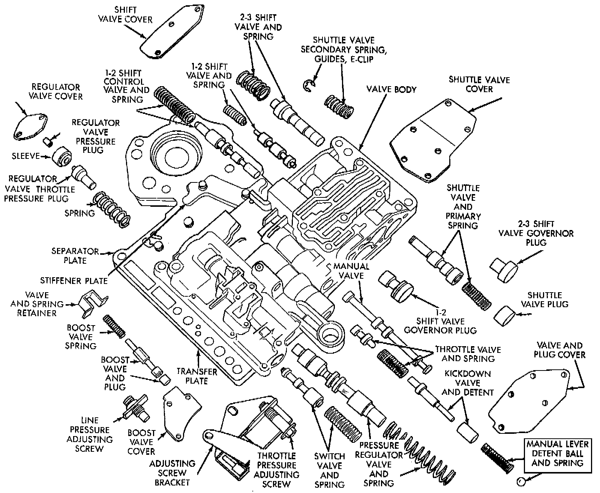

Valve Body: Diagrams
Upper Housing Control Valve Locations:

Shuttle And Boost Valve Components:

Upper Housing Shift Valve And Pressure Plug Locations:

Lower Housing Shift Valves And Springs:

Upper Housing Valves, Plug, Springs And Brackets:
